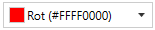
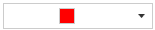
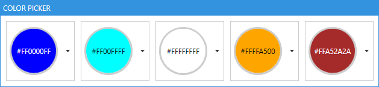

Table of content
- Table of content
- Introduction
- ColorNamesDictionary and ColorHelper
- ColorCanvas
- ColorPalette
- ColorEyeDropper
- ColorPicker
Introduction
The ColorPicker controls can be used to select any System.Windows.Media.Color (in this document simply called Color). There are four different controls available to select a Color.
| Control | Use case |
|---|---|
ColorCanvas |
Select a Color by specifying its ARGB or AHSV channels. |
ColorPalette |
Select a Color from predefined colors presented in a special ListBox. |
ColorEyeDropper |
Select a Color from anywhere on the screen. |
ColorPicker |
A combination of the three controls above presented in a ComboBox like control. |
ColorNamesDictionary and ColorHelper
Colors may have a name which is localize-able if you want to. The color names are stored in a Dictionary<Color?, string> which is used to get the name of the provided Color.
Looking up a color name
If you want to look up a name of a given Color in code behind use this line:
string nameOfTheColor = MahApps.Metro.Controls.ColorHelper.DefaultInstance.GetColorName(myColor, theDictionaryToUse);
Note
If you set the second parameter to 'null' the default dictionary will be used.
Getting a color from a given name
You can also get back the color by looking up its name. The routine will first check the dictionary for the first occurrence of the given name and if it was not found it will try to use ColorConverter.ConvertFromString which also accepts the HTML-Notation of the Color. If the Color cannot be found it will return null.
Examples
Color? myColor = MahApps.Metro.Controls.ColorHelper.DefaultInstance.ColorFromString(myColorName, theDictionaryToUse);
// this will look up the German word "Blau" and returns blue color
Color? myColor = MahApps.Metro.Controls.ColorHelper.DefaultInstance.ColorFromString("Blau", null);
// this will look up the HTML-notation "#FF000000" and returns black color
Color? myColor = MahApps.Metro.Controls.ColorHelper.DefaultInstance.ColorFromString("#FF000000", null);
Note
If you set the second parameter to 'null' the default dictionary will be used.
How to provide custom color names
You can change the build in dictionary via MahApps.Metro.Controls.ColorHelper.ColorNamesDictionary by adding, removing or changing any color name. You can also create your own Dictionary<Color?, string> anywhere in your Model or ViewModel to provide your own color names. That way you can use also different dictionaries for different ColorPicker.
Example
Dictionary<Color?, string> myColorNames = new Dictionary<Color?, string>()
{
{ Colors.Green, "every thing is fine" },
{ Colors.Yellow, "warning" },
{ Colors.Red, "error" }
};
public Dictionary<Color?, string> MyColorNames
{
get { return myColorNames; }
}
<!-- example usage -->
<!-- xmlns:mah="http://metro.mahapps.com/winfx/xaml/controls" -->
<mah:ColorPicker ColorNamesDictionary="{Binding MyColorNames}" />
Provide translations for a language of your choice
Currently implemented color languages are
- English
- German
You can help providing translations to the build in dictionary.
We recommend using the ResXManager.
Use your own ColorHelper
The ColorHelper can be derived from which lets you create your own logic for ColorFromString and GetColorName:
// Add this to your using-section
using MahApps.Metro.Controls;
namespace MyNamespace
{
public class MyColorHelper : ColorHelper
{
public static new readonly MyColorHelper DefaultInstance = new();
public override Color? ColorFromString(string? colorName, Dictionary<Color, string>? colorNamesDictionary)
{
// Your logic goes here
return myFoundColor;
}
public override string? GetColorName(Color? color, Dictionary<Color, string>? colorNamesDictionary, bool useAlphaChannel)
{
// Your logic goes here
return theNameOfMyColor;
}
}
}
You can then use this class like every other Property:
<!-- make sure to add the right namespace -->
<!-- xmlns:mah="http://metro.mahapps.com/winfx/xaml/controls" -->
<mah:ColorPicker ColorHelper="[[Bind here to your ColorHelper]]" />
<mah:ColorCanvas ColorHelper="[[Bind here to your ColorHelper]]" />
<mah:ColorPalette ColorHelper="[[Bind here to your ColorHelper]]" />
<!-- example usage -->
<!-- xmlns:my="clr-namespace:MyNamespace;assembly=YourAssembly" -->
<mah:ColorPicker ColorHelper="{Binding Source={x:Static my:MyColorHelper.DefaultInstance}}" />
ColorCanvas
The ColorCanvas control lets the user select a Color by the following options:
- Changing the ARGB-Values
- Changing the HSV-Values
- Entering the color name or HTML-notation
- Picking a color from anywhere of the screen
The user interface

| No. | Description |
|---|---|
| 01 | Red color channel from 0 to 255 |
| 02 | Green color channel from 0 to 255 |
| 03 | Blue color channel from 0 to 255 |
| 04 | Hue channel from 0° to 360° |
| 05 | Saturation channel from 0% to 100% |
| 06 | Value channel from 0% to 100 % |
| 07 | Alpha channel from 0 to 255 |
| 08 | The color name or HTML-notation |
| 09 | A ColorEyeDropper to select a color from anywhere of the screen |
| 10 | Select the saturation and value by moving the cross-hair in horizontally and vertically direction |
| 11 | A preview of the selected color |
Properties
| Property | Type | Description |
|---|---|---|
| SelectedColor | Color? | Gets or sets the selected color |
| DefaultColor | Color? | Gets or sets the default color if the SelectedColor is null |
| SelectedHSVColor | HSVColor | Gets the selected color as HSVColor |
| ColorName | string | Gets or sets the name of the selected color (see also ColorHelper) |
| ColorNamesDictionary | Dictionary<Color?, string> | Gets or sets the Dictionary<Color?, string> used to get or set the ColorName (see also ColorHelper) |
| A | byte | Gets or sets the alpha channel |
| R | byte | Gets or sets the red channel |
| G | byte | Gets or sets the green channel |
| B | byte | Gets or sets the blue-channel |
| Hue | double | Gets or sets the hue channel |
| Saturation | double | Gets or sets the Saturation-channel |
| Value | double | Gets or sets the Value-channel |
| LabelAlphaChannel | string | Gets or sets the Label for the Alpha-channel |
| LabelRedChannel | string | Gets or sets the Label for the Red-channel |
| LabelGreenChannel | string | Gets or sets the Label for the Green-channel |
| LabelBlueChannel | string | Gets or sets the Label for the Blue-channel |
| LabelHueChannel | string | Gets or sets the Label for the Hue-channel |
| LabelSaturationChannel | string | Gets or sets the Label for the Saturation-channel |
| LabelValueChannel | string | Gets or sets the Label for the Value-channel |
| LabelColorPreview | string | Gets or sets the Label for the preview field |
| LabelColorName | string | Gets or sets the Label for the color name |
| AreRgbChannelsVisible | bool | Gets or sets if the slider for the RGB-channels are visible. The default is true |
| AreHsvChannelsVisible | bool | Gets or sets if the slider for the HSV-channels are visible. The default is true |
| IsAlphaChannelVisible | bool | Gets or sets if the slider for the Alpha-channel isvisible. The default is true |
| IsColorNameVisible | bool | Gets or sets if the entry for the ColorName is visible. The default is true |
| IsEyeDropperVisible | bool | Gets or sets if the EyeDropper is visible. The default is true |
| ColorHelper | ColorHelper | Gets or sets the ColorHelper to use |
Events
| Event | Description |
|---|---|
SelectedColorChanged |
Occurs when the SelectedColor changed |
DynamicResources
You can override the following Resources to modify the appearance of the ColorCanvas further.
| Key | Type | Description |
|---|---|---|
| MahApps.Brushes.Tile | Brush | Overrides the checkered Brush which is visible if the color is transparent |
| MahApps.DataTemplates.ColorPicker.NoColor | DataTemplate | Overrides the DataTemplate of the preview if no color is selected |
| MahApps.Styles.Slider.ColorComponent.ARGB | Style | Overrides the Style of the A-, R-, G- and B-Slider |
| MahApps.Styles.Slider.ColorComponent.Hue | Style | Overrides the Style of the Hue-Slider |
| MahApps.Styles.Slider.ColorComponent.SV | Style | Overrides the Style of the S- and V-Slider |
| MahApps.Styles.ColorEyeDropper.ColorCanvas | Style | Overrides the Style of the ColorEyeDropper |
Example
<!-- make sure to add the right namespace -->
<!-- xmlns:mah="http://metro.mahapps.com/winfx/xaml/controls" -->
<mah:ColorCanvas x:Name="ColorCanvasExample"
SelectedColor="Blue"
DefaultColor="Transparent"
LabelAlphaChannel="Alpha"
LabelBlueChannel="Blue"
LabelGreenChannel="Green"
LabelRedChannel="Red" />
ColorPalette
The ColorPalette control can be used to present the user a swatch of predefined colors. As this control is derived from System.Windows.Controls.ListBox you can use all functionality know from the ListBox control.
The user interface

| No | Description |
|---|---|
| 01 | The header of the ColorPalette |
| 02 | Displays the available colors |
| 03 | The currently selected color is highlighted |
Properties
The available colors can be either added directly to the Items or by binding to the ItemsSource. The selection can be handled by binding to SelectedValue, SelectedItem or SelectedIndex.
In addition to this the ColorPalette provides the following properties.
| Property | Type | Description |
|---|---|---|
| Header | object | Gets or sets the header content |
| HeaderTemplate | DataTemplate | Gets or sets the header template |
| ColorNamesDictionary | Dictionary<Color?, string> | Gets or sets the Dictionary<Color?, string> used to get or set the ColorName (see also ColorHelper) |
| ColorHelper | ColorHelper | Gets or sets the ColorHelper to use |
DynamicResources
| Key | Type | Description |
|---|---|---|
| MahApps.Sizes.ColorListBox.ItemWidth | double | Overrides the width of the items |
| MahApps.Sizes.ColorListBox.ItemHeight | double | Overrides the height of the items |
| MahApps.Brushes.Tile.Small | Brush | Overrides the checkered Brush which is visible if the color is transparent |
| MahApps.Styles.ListBoxItem.ColorPaletteItem | Style | Overrides the Style of the items |
| MahApps.Templates.ColorPaletteItem | DataTemplate | Overrides the DataTemplate of the items |
| MahApps.Styles.ColorPalette | Style | Overrides the default Style for the ColorPalette |
Example
The below example shows how to use the ColorPalette via setting the ItemsSource to a build in ColorPalette.
<!-- make sure to add the right namespace -->
<!-- xmlns:mah="http://metro.mahapps.com/winfx/xaml/controls" -->
<mah:ColorPalette Header="An Example Palette"
ItemsSource="{x:Static mah:BuildInColorPalettes.WpfColorsPalette}" />
Note
MahApps provides build in color palettes
The second example shows how to add colors directly in XAML.
<!-- make sure to add the right namespace -->
<!-- xmlns:mah="http://metro.mahapps.com/winfx/xaml/controls" -->
<mah:ColorPalette Header="A second Example Palette" >
<Color>Red</Color>
<Color>Green</Color>
<Color>Blue</Color>
</mah:ColorPalette>
Build in color palettes
MahApps provides the following build in ColorPalettes:
- WpfColorsPalette (all colors in
Sytem.Windows.Media.Colors) - StandardColorsPalette (the primary colors)
- RecentColors (used to store the recently selected colors)
All build in ColorPalettes are internally an ObservableCollection, so you can modify them to your needs.
ColorEyeDropper
The ColorEyeDropper control lets the user select a Color with the mouse directly from anywhere on the screen, even outside of your Application. As this control is derived from System.Windows.Controls.Button you can use all functionality know from the Button control.
The user interface
If the user presses the left mouse button on the ColorEyeDropper the cursor will change to an eye-dropper symbol and a preview popup will appear. Now the user needs to keep the mouse pressed while dragging the mouse to the desired pixel. A magnifier with a cross hair helps getting the exact pixel position. As soon as the user releases the left mouse button the SelectedColor will get updated.

| No | Description |
|---|---|
| 01 | The Button to start the ColorEyeDropper |
| 02 | The cursor while selecting a color |
| 03 | A preview of the selected color |
| 04 | A magnifier with a cross hair |

Properties
| Property | Type | Description |
|---|---|---|
| SelectedColor | Color? | Gets or sets the selected color |
| PreviewImageOuterPixelCount | int | Gets or sets how many pixels the preview magnifier should render around the curent mouse position. The default is 2 |
| EyeDropperCursor | Cursor | Gets or sets the Cursor when in selection mode |
| PreviewContentTemplate | DataTemplate | Gets or sets the DataTemplate of the preview Popup |
Events
| Event | Description |
|---|---|
| SelectedColorChanged | Occurs when the SelectedColor changed |
Example
<!-- make sure to add the right namespace -->
<!-- xmlns:mah="http://metro.mahapps.com/winfx/xaml/controls" -->
<mah:ColorEyeDropper Content="This is my EyeDropper"
SelectedColor="{Binding Path=MyColorToBind}" />
If you want to modify the preview template please take a look to the below example. It shows how to make a circular magnifier with the preview color shown in the outer circle.

<!-- make sure to add the right namespace -->
<!-- xmlns:mah="http://metro.mahapps.com/winfx/xaml/controls" -->
<!-- xmlns:po="http://schemas.microsoft.com/winfx/2006/xaml/presentation/options" -->
<mah:ColorEyeDropper Content="{iconPacks:Material Kind=Eyedropper}"
SelectedColor="{DynamicResource MahApps.Colors.AccentBase}">
<mah:ColorEyeDropper.PreviewContentTemplate>
<DataTemplate DataType="{x:Type mah:ColorEyePreviewData}">
<Border Width="62"
Height="62"
Padding="0"
BorderBrush="{Binding PreviewBrush}"
BorderThickness="5"
CornerRadius="{Binding RelativeSource={RelativeSource Mode=Self}, Path=ActualHeight, Converter={mah:SizeToCornerRadiusConverter}}">
<Grid HorizontalAlignment="Center" VerticalAlignment="Center">
<Grid.Clip>
<EllipseGeometry Center="25,25"
RadiusX="25"
RadiusY="25" />
</Grid.Clip>
<Image x:Name="PART_PreviewImage"
Width="50"
Height="50"
RenderOptions.BitmapScalingMode="NearestNeighbor"
Source="{Binding PreviewImage}" />
<Path Stroke="{Binding PreviewBrush, Converter={x:Static mah:BackgroundToForegroundConverter.Instance}}" StrokeThickness="1">
<Path.Data>
<PathGeometry po:Freeze="true" Figures=" m 0 25 20 0 m 5 5 0 20 m 5 -25 20 0 m -25 -25 0 20 m -5 0 H20 H30 V30 H20 z" />
</Path.Data>
</Path>
</Grid>
</Border>
</DataTemplate>
</mah:ColorEyeDropper.PreviewContentTemplate>
</mah:ColorEyeDropper>
Note
The DataTemplate should be designed for this DataType: MahApps.Metro.Controls.ColorEyePreviewData
ColorPicker
This control lets the user select a Color in a ComboBox-like control. The user can either select a Color from a predefined ColorPalette or select a custom one in a ColorCanvas.
The user interface

| No | Description |
|---|---|
| 01 | Press the arrow to open or close the drop down |
| 02 | Select between the predefined colors tab and the advanced tab |
| 03 | Displays the selected color |
| 04 | Optional: Shows a floating watermark |
| 05 | Optional: A clear button to reset the SelectedColor either to DefaultColor or null |
Properties
| Property | Type | Description |
|---|---|---|
| SelectedColor | Color? | Gets or sets the selected color |
| DefaultColor | Color? | Gets or sets the default color if the SelectedColor is null |
| SelectedHSVColor | HSVColor | Gets the selected color as HSVColor |
| ColorName | string | Gets or sets the name of the selected color (see also ColorHelper) |
| ColorNamesDictionary | Dictionary<Color?, string> | Gets or sets the Dictionary<Color?, string> used to get or set the ColorName (see also ColorHelper) |
| A | byte | Gets or sets the alpha channel |
| R | byte | Gets or sets the red channel |
| G | byte | Gets or sets the green channel |
| B | byte | Gets or sets the blue-channel |
| Hue | double | Gets or sets the hue channel |
| Saturation | double | Gets or sets the Saturation-channel |
| Value | double | Gets or sets the Value-channel |
| AddToRecentColorsTrigger | AddToRecentColorsTrigger | Gets or sets the AddToRecentColorsTrigger |
| LabelAlphaChannel | string | Gets or sets the Label for the alpha-channel |
| LabelRedChannel | string | Gets or sets the Label for the red-channel |
| LabelGreenChannel | string | Gets or sets the Label for the green-channel |
| LabelBlueChannel | string | Gets or sets the Label for the blue-channel |
| LabelHueChannel | string | Gets or sets the Label for the hue-channel |
| LabelSaturationChannel | string | Gets or sets the Label for the saturation-channel |
| LabelValueChannel | string | Gets or sets the Label for the value-channel |
| LabelColorPreview | string | Gets or sets the Label for the preview field |
| LabelColorName | string | Gets or sets the Label for the color name |
| ColorPalettesTabHeader | object | Gets or sets the Header of the ColorPalettes-tab |
| ColorPalettesTabHeaderTemplate | DataTemplate | Gets or sets the DataTemplate for the Header of the ColorPalettes-tab |
| AdvancedTabHeader | object | Gets or sets the Header of the ColorCanvas-tab |
| AdvancedTabHeaderTemplate | DataTemplate | Gets or sets the DataTemplate for the Header of the ColorCanvas-tab |
| DropDownHeight | double | Gets or sets the height of the DropDown |
| DropDownWidth | double | Gets or sets the width of the DropDown |
| IsDropDownOpen | bool | Gets or sets whether the DropDown is open |
| IsAdvancedTabVisible | bool | Gets or sets whether the advanced tab is visible |
| IsColorPalettesTabVisible | bool | Gets or sets whether the standard tab is visible |
| AreRgbChannelsVisible | bool | Gets or sets if the slider for the RGB-channels are visible. The default is true |
| AreHsvChannelsVisible | bool | Gets or sets if the slider for the HSV-channels are visible. The default is true |
| IsAlphaChannelVisible | bool | Gets or sets if the slider for the Alpha-channel is visible. The default is true |
| IsColorNameVisible | bool | Gets or sets if the entry for the ColorName is visible. The default is true |
| IsEyeDropperVisible | bool | Gets or sets if the EyeDropper is visible. The default is true |
| TabControlStyle | Style | Gets or sets the Style for the TabControl inside the DropDown |
| TabItemStyle | Style | Gets or sets the Style for the TabItems inside the DropDown |
| ColorHelper | ColorHelper | Gets or sets the ColorHelper to use |
| CloseOnSelectedColorChanged | bool | Gets or sets whether the DropDown should close after a color was selected from a ColorPalette. The default is false |
The ColorPicker can hold up to five different ColorPalettes which can be controlled by the following properties. As the properties repeat for all five ColorPalettes we use [###ColorPalette] as a placeholder. In your code please replace it with one of these names:
- StandardColorPalette
- AvailableColorPalette
- RecentColorPalette
- CustomColorPalette01
- CustomColorPalette02
| Property | Type | Description |
|---|---|---|
| [###ColorPalette]Header | object | Gets or sets the header content of the ColorPalette |
| [###ColorPalette]HeaderTemplate | DataTemplate | Gets or sets the header content template of the ColorPalette |
| [###ColorPalette]ItemsSource | IEnumerable | Gets or sets the ItemsSource of the ColorPalette |
| [###ColorPalette]Style | Style | Gets or sets the Style of the ColorPalette |
| Is[###ColorPalette]Visible | bool | Gets or sets whether the ColorPalette is visible |
The RecentColorPalette is a special ColorPalette which is used to store the recent selected colors. To control the behavior of this ColorPalette you can use these two properties.
| Property | Type | Description |
|---|---|---|
| AddToRecentColorsTrigger | Enum | Gets or sets the trigger when the RecentColorsPalette should be updated. Possible values are Never, ColorPickerClosed or SelectedColorChanged. The default is ColorPickerClosed |
| MaximumRecentColorsCount | int | This is an attached property which gets or sets the maximum number of recent color items. If the number stored in the RecentColorPalette exceeds this value the oldest entries will be removed. |
Events
| Event | Description |
|---|---|
| DropDownOpened | Occurs when the DropDown opened |
| DropDownClosed | Occurs when the DropDown closed |
| SelectedColorChanged | Occurs when the SelectedColor-Property changed |
DynamicResources
| Key | Type | Description |
|---|---|---|
| MahApps.Templates.ColorPickerContent.ColorAndName | DataTemplate | Overrides the default DataTemplate for the SelectedColorTemplate-Property |
| MahApps.Brushes.Tile | Brush | Overrides the checkered Brush which is visible if the color is transparent |
| MahApps.Styles.TabControl.ColorPicker | Style | Overrides the Style for the TabControl inside the DropDown |
| MahApps.Styles.ToggleButton.ColorPickerDropDown | Style | Overrides the Style for the ColorPicker-ToggleButton |
| MahApps.Styles.ColorPalette.ColorPickerDropDown | Style | Overrides the Style for the ColorPicker-ColorPalette |
Example
Basic example
<!-- make sure to add the right namespace -->
<!-- xmlns:mah="http://metro.mahapps.com/winfx/xaml/controls" -->
<mah:ColorPicker SelectedColor="{Binding myColor}"
mah:TextBoxHelper.ClearTextButton="True"
mah:TextBoxHelper.UseFloatingWatermark="True"
mah:TextBoxHelper.Watermark="Select a color"
AddToRecentColorsTrigger="SelectedColorChanged" />
Using the SelectedColorChanged-Event
The following example shows how the SelectedColorChanged-Event can be used to create a custom theme.
<!-- make sure to add the right namespace -->
<!-- xmlns:mah="http://metro.mahapps.com/winfx/xaml/controls" -->
<mah:ColorPicker SelectedColorChanged="ColorPicker_SelectedColorChanged"
mah:TextBoxHelper.ClearTextButton="True"
mah:TextBoxHelper.UseFloatingWatermark="True"
mah:TextBoxHelper.Watermark="Select a color"
AddToRecentColorsTrigger="SelectedColorChanged" />
The event event is handled in the code behind section:
// Make sure you have addes these usings into your usings section
using ControlzEx.Theming;
using System.Windows;
using System.Windows.Media;
private void ColorPicker_SelectedColorChanged(object sender, RoutedPropertyChangedEventArgs<Color?> e)
{
if (e.NewValue.HasValue)
{
Theme newTheme = new Theme(name: "CustomTheme",
displayName: "CustomTheme",
baseColorScheme: "Light",
colorScheme: "CustomAccent",
primaryAccentColor: e.NewValue.Value,
showcaseBrush: new SolidColorBrush(e.NewValue.Value),
isRuntimeGenerated: true,
isHighContrast: false);
ThemeManager.Current.ChangeTheme(Application.Current, newTheme);
}
}

Customizing the content of the color picker
This section shows how the content (03 in the picture below) can be customized
There are also some build-in DataTemplates: MahApps.Metro Source ▶ Themes ▶ ColorPicker ▶ ColorPicker.xaml
ColorAndName (default)
<mah:ColorPicker Width="150"
SelectedColor="red"
SelectedColorTemplate="{DynamicResource MahApps.Templates.ColorPickerContent.ColorAndName}" />

ColorOnly
<mah:ColorPicker Width="150"
SelectedColor="red"
SelectedColorTemplate="{DynamicResource MahApps.Templates.ColorPickerContent.ColorOnly}" />

A custom DataTemplate could look like this:
<!-- make sure to add the right namespace -->
<!-- xmlns:mah="http://metro.mahapps.com/winfx/xaml/controls" -->
<!-- Add a DataTemplate in your Resources-Section. This can be in App.xaml, MainWindow.xaml or any other place. Here we define it inside a UserControl -->
<UserControl.Resources>
<DataTemplate x:Key="My.Datatemplates.CustomColorPickerContent">
<Grid x:Name="RootGrid">
<Grid.ColumnDefinitions>
<ColumnDefinition Width="Auto" />
<ColumnDefinition Width="*" />
</Grid.ColumnDefinitions>
<mah:ClipBorder Grid.Column="0"
Width="80"
Height="80"
Background="{DynamicResource MahApps.Brushes.Tile.Small}"
BorderBrush="{DynamicResource MahApps.Brushes.Control.Border}"
BorderThickness="3"
CornerRadius="{Binding RelativeSource={RelativeSource Mode=Self}, Path=ActualHeight, Converter={mah:SizeToCornerRadiusConverter}}">
<Grid Background="{Binding Converter={x:Static mah:ColorToSolidColorBrushConverter.DefaultInstance}}">
<TextBlock HorizontalAlignment="Center"
VerticalAlignment="Center"
Foreground="{Binding RelativeSource={RelativeSource Mode=FindAncestor, AncestorType=Grid}, Path=Background, Converter={x:Static mah:BackgroundToForegroundConverter.Instance}}"
Text="{Binding}" />
</Grid>
</mah:ClipBorder>
</Grid>
<DataTemplate.Triggers>
<DataTrigger Binding="{Binding}" Value="{x:Null}">
<Setter TargetName="RootGrid" Property="Visibility" Value="Collapsed" />
</DataTrigger>
</DataTemplate.Triggers>
</DataTemplate>
</UserControl.Resources>
<!-- Now we need to reference our DataTemplate either as StaticResource or DynamicResource -->
<mah:ColorPicker Height="100"
HorizontalAlignment="Left"
SelectedColor="blue"
SelectedColorTemplate="{StaticResource My.Datatemplates.CustomColorPickerContent}" />
The final result will look like this:
